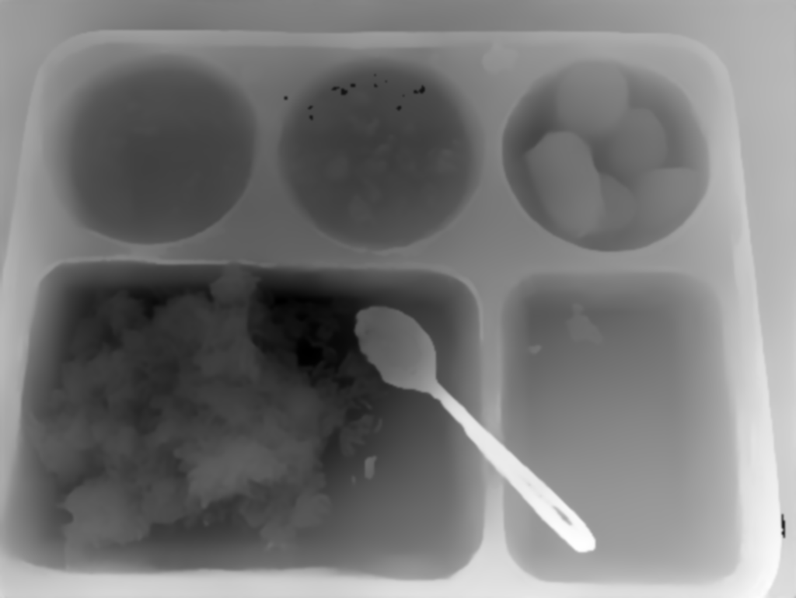
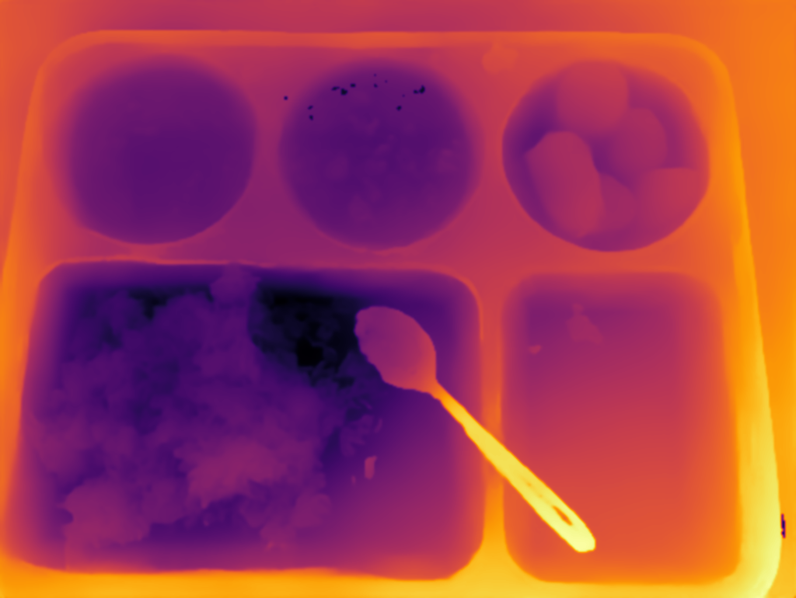
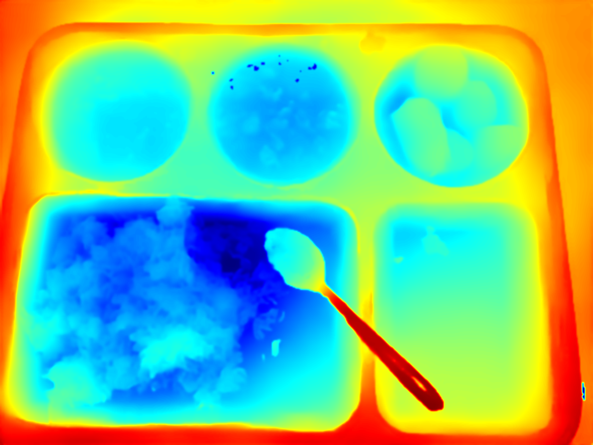
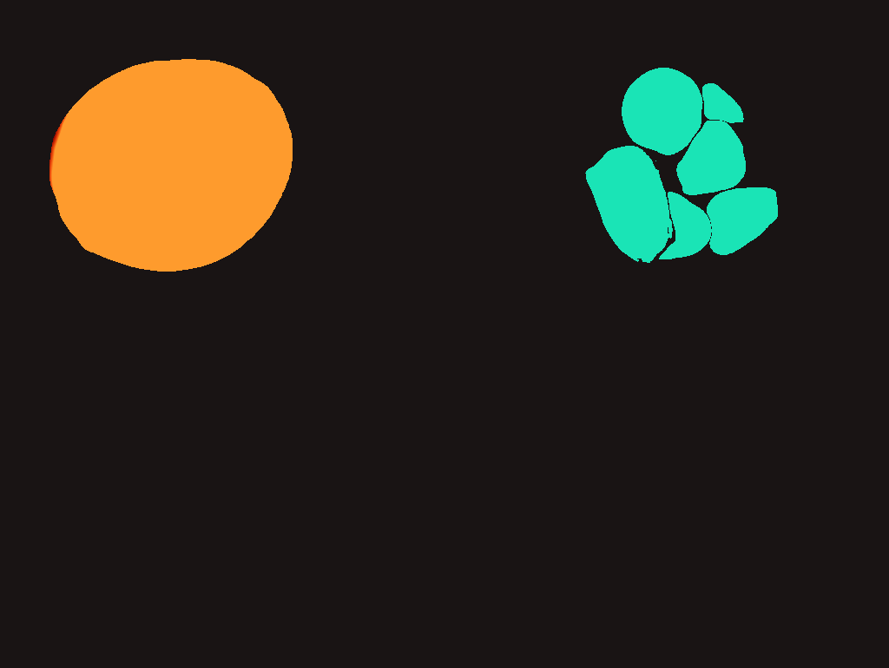
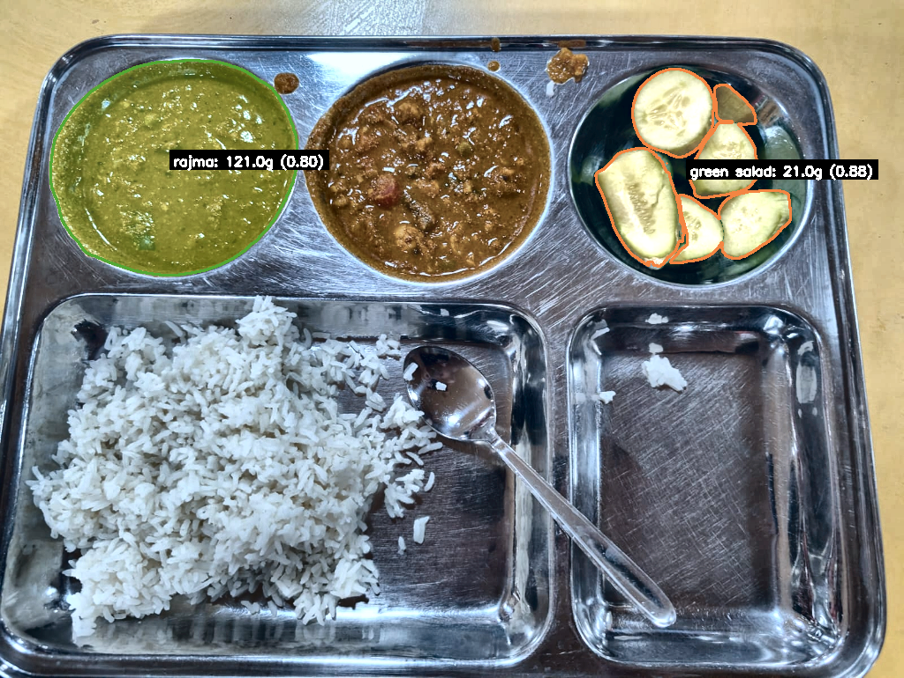

{
"resolution": "1600x1204",
"channels": 3,
"dtype": "uint8",
"expected_items": [
"chapati",
"green salad",
"mix veg",
"steamed rice",
"cake",
"chutney",
"dal",
"palak paneer",
"curd",
"rajma",
"chole"
],
"plate_profile": null,
"debug": true
}





[]
{
"item_id": "green salad_1",
"area_pixels": 30266,
"estimated_height_cm": 0.915,
"volume_estimate_ml": 35.1,
"density": 0.6,
"mass_g": 21.0,
"class_label": "green salad",
"class_confidence": 0.9174,
"depth_stability": 1.0,
"scale_confidence": 0.7,
"composite_confidence": 0.8761,
"prior_applied": true,
"diagnostics": {
"original_sam3_query": "cucumber",
"candidate_labels": [
"cucumber"
],
"menu_matching_result": "green salad",
"final_food_label": "green salad",
"confidence": 0.9174,
"uncertainty": 0.0826,
"original_mask_id": "mask_00",
"grouped_instance_id": "inst_0",
"fragment_count": 6,
"decision_reason": "FRAGMENT_GROUPED_6_PIECES"
},
"fragment_count": 1
}{
"item_id": "rajma_2",
"area_pixels": 54250,
"estimated_height_cm": 1.952,
"volume_estimate_ml": 110.0,
"density": 1.1,
"mass_g": 121.0,
"class_label": "rajma",
"class_confidence": 0.7663,
"depth_stability": 1.0,
"scale_confidence": 0.7,
"composite_confidence": 0.8007,
"prior_applied": true,
"diagnostics": {
"original_sam3_query": "curry",
"candidate_labels": [
"curry"
],
"menu_matching_result": "rajma",
"final_food_label": "rajma",
"confidence": 0.7663,
"uncertainty": 0.2337,
"original_mask_id": "mask_01",
"grouped_instance_id": "inst_5",
"fragment_count": 1,
"decision_reason": "SINGLE_INSTANCE"
},
"fragment_count": 1
}

{
"food_items": [
{
"name": "green salad",
"volume_ml": 35.1,
"mass_g": 21.0,
"calories": 6.3,
"protein": 0.3,
"carbs": 1.0,
"fat": 0.1,
"confidence": 0.8761,
"class_label": "green salad",
"class_confidence": 0.9174,
"top_k": [
{
"label": "green salad",
"confidence": 0.9174,
"raw_similarity": 0.9174
}
],
"identification_status": "recognized",
"menu_match": true,
"matched_menu_item": "green salad",
"identification_confidence": 0.9174,
"segmentation_confidence": 0.9174,
"association_confidence": 1.0,
"menu_match_confidence": 1.0,
"depth_confidence": 1.0,
"scale_confidence": 0.7,
"diagnostics": {
"original_sam3_query": "cucumber",
"candidate_labels": [
"cucumber"
],
"menu_matching_result": "green salad",
"final_food_label": "green salad",
"confidence": 0.9174,
"uncertainty": 0.0826,
"original_mask_id": "mask_00",
"grouped_instance_id": "inst_0",
"fragment_count": 6,
"decision_reason": "FRAGMENT_GROUPED_6_PIECES"
},
"fragment_count": 1,
"food_name": "green salad",
"instance_count": 1
},
{
"name": "rajma",
"volume_ml": 110.0,
"mass_g": 121.0,
"calories": 169.4,
"protein": 7.3,
"carbs": 25.8,
"fat": 4.0,
"confidence": 0.8007,
"class_label": "rajma",
"class_confidence": 0.7663,
"top_k": [
{
"label": "rajma",
"confidence": 0.7663,
"raw_similarity": 0.7663
}
],
"identification_status": "recognized",
"menu_match": true,
"matched_menu_item": "rajma",
"identification_confidence": 0.7663,
"segmentation_confidence": 0.7663,
"association_confidence": 1.0,
"menu_match_confidence": 1.0,
"depth_confidence": 1.0,
[
{
"step": "Input",
"message": "Original image saved",
"params": {
"resolution": "1600x1204"
},
"elapsed_s": 0.0998,
"input_file": null,
"output_file": "original.png",
"timestamp": "2026-11-12T15:23:18.042585"
},
{
"step": "Pipeline",
"message": "Step 1 — Preprocessing & Perspective Warp",
"params": {},
"elapsed_s": null,
"input_file": null,
"output_file": null,
"timestamp": "2026-11-12T15:23:18.042585"
},
{
"step": "Quality Gate",
"message": "PASS",
"params": {
"blur_score": 351.14,
"tilt_deg": 25.0
},
"elapsed_s": null,
"input_file": null,
"output_file": null,
"timestamp": "2026-11-12T15:23:18.163299"
},
{
"step": "Preprocessing",
"message": "Resize applied",
"params": {
"original": "1600x1204",
"target_long_edge": 1024,
"scale": 0.64
},
"elapsed_s": 0.0009,
"input_file": null,
"output_file": "01_resized.png",
"timestamp": "2026-11-12T15:23:18.204975"
},
{
"step": "Preprocessing",
"message": "Gaussian blur applied",
"params": {
"kernel": 5
},
"elapsed_s": 0.0007,
"input_file": null,
"output_file": "02_denoised.png",
"timestamp": "2026-11-12T15:23:18.247019"
},
{
"step": "Preprocessing",
"message": "LAB color normalization applied",
"params": {},
"elapsed_s": 0.1466,
"input_file": null,
"output_file": "03_color_normalized.png",
"timestamp": "2026-11-12T15:23:18.434350"
},
{
"step": "Preprocessing",
"message": "CLAHE contrast enhancement applied",
"params": {
"clip_limit": 2.0,
"tile_grid": "8x8"
},
"elapsed_s": 0.0057,
"input_file": null,
"output_file": "04_contrast_enhanced.png",
"timestamp": "2026-11-12T15:23:18.479271"
},
{
"step": "Preprocessing",
"message": "Canny edge detection",
"params": {
"low": 50,
"high": 150
},
"elapsed_s": 0.| Step | Message | Params | Time |
|---|---|---|---|
| Input | Original image saved | {"resolution": "1600x1204"} | 0.0998s |
| Pipeline | Step 1 — Preprocessing & Perspective Warp | — | — |
| Quality Gate | PASS | {"blur_score": 351.14, "tilt_deg": 25.0} | — |
| Preprocessing | Resize applied | {"original": "1600x1204", "target_long_edge": 1024, "scale": 0.64} | 0.0009s |
| Preprocessing | Gaussian blur applied | {"kernel": 5} | 0.0007s |
| Preprocessing | LAB color normalization applied | — | 0.1466s |
| Preprocessing | CLAHE contrast enhancement applied | {"clip_limit": 2.0, "tile_grid": "8x8"} | 0.0057s |
| Preprocessing | Canny edge detection | {"low": 50, "high": 150} | 0.0172s |
| Preprocessing | Warp skipped (no 4-pt contour) | {"warped": false} | — |
| Preprocessing | Complete | {"output_size": "1024x770"} | 0.5052s |
| Pipeline | Step 2 — Compartments & Scale | — | — |
| Compartment Detection | Detected 0 compartments | {"min_area_frac": 0.02, "max_area_frac": 0.9, "compartment_count": 0} | 0.0095s |
| Scale Calibration | Fallback to bbox-based calibration | {"cm_per_pixel": 0.03559, "method": "bbox"} | — |
| Compartment Detection | Scale computed | {"cm_per_pixel": 0.03559, "pixel_area_cm2": 0.00126671, "compartments": 0, "scale_confidence": 0.7} | 0.0681s |
| Pipeline | Step 3 — Depth Estimation | — | — |
| Depth Estimation | Depth Anything depth map computed (smoothed) | {"device": "cuda", "is_metric": true, "shape": [770, 1024], "min": -90.211, "max": -47.537} | 25.7542s |
| Depth Normalization | Surface normal plane subtracted from depth | {"baseline": -63.219, "fitted_plane": true, "is_metric": true} | 0.0514s |
| Depth Metric [cm] | Metric depth height in cm directly computed | {"cm_per_pixel": 0.03559, "min_cm": 0.0, "max_cm": 11.78, "mean_cm": 0.68} | 0.0059s |
| Depth Estimation | Complete | — | 26.0000s |
| Pipeline | Step 4–6 — SAM 3 Food Identification & Segmentation | — | — |
| SAM3 | Identified 2 food items (2 recognized, 0 unlisted, 0 uncertain) | — | 106.6661s |
| Pipeline | Step 7 — Volume & Mass Estimation | — | — |
| Volume Estimation | Computed mass for 2 items | {"total_items": 2} | 0.0338s |
| Pipeline | ✅ Pipeline complete | {"total_food_items": 2, "avg_confidence": 0.8384, "scale_method": "bbox"} | 133.6954s |